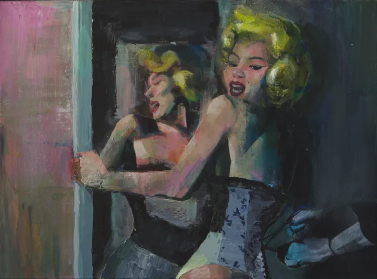
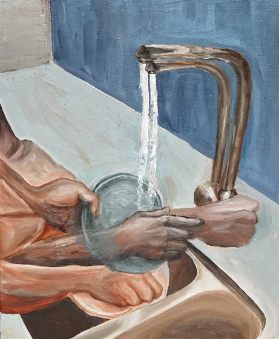
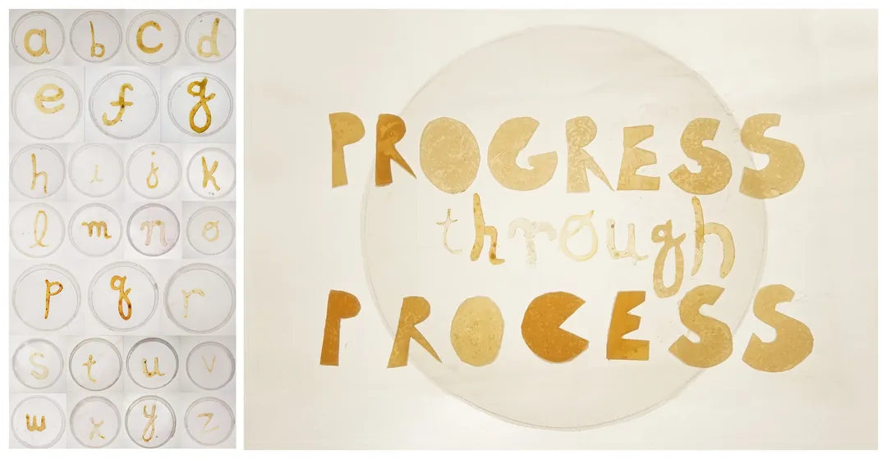
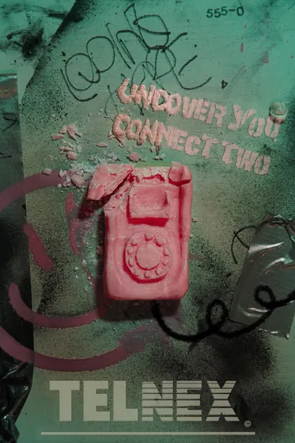

Off hours
Off hours
What I make on my own time: visuals on the ceiling of a club every Thursday, and art.
Live visuals
Art
-

Fine Arts · 2024Anticipation →
Marilyn Monroe in a private moment of self-reflection, under the pressure of her public image. Oil on canvas.
-

Fine Arts · 2023Arrested Motion →
Hands washing dishes, in transparent layers and brush texture, to study a repeated movement.
-

Design · 2025Agar Alphabet →
Letterforms grown from bacteria on agar plates, recording how samples and growth conditions changed the alphabet.
-

Design · 2024 Scholastic honourable mentionTelnex →
A bar of soap carved into a rotary telephone, and a fictional Fight Club advertisement around it.